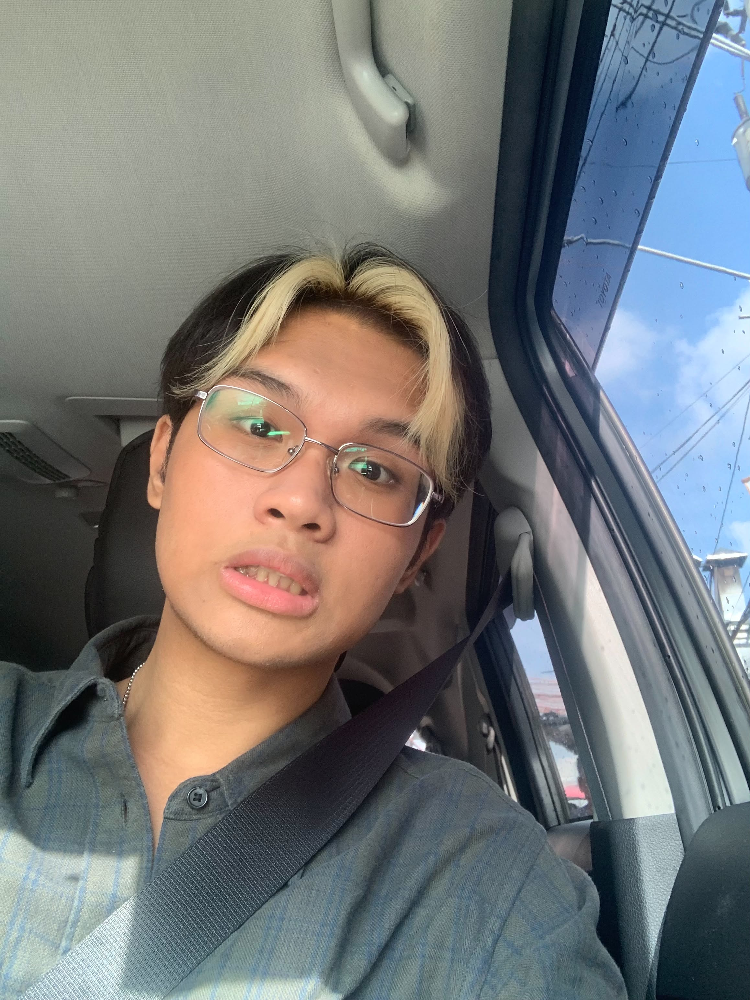

Hello! I am a BSIT-CST student from FEU Diliman. I like K-POP, especially CORTIS and SEVENTEEN. I am also into F1 (Red Bull, Mercedes, and Ferrari are my favorite teams). I like playing video games, creating creative designs, writing, and reading.